Quinta Real de Caxias (Portugal), restauro e réplicas do conjuntos escultóricos em terracota do escultor portugues Joaquim Machado de Castro sec XVII, (esculturas: Ceres, Guerreiro Romano, Jupiter, Narciso).

 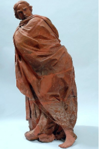
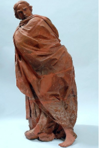

Réplicas de arte antiga em Portugal (Marco Miliario Romano sec II a.c, Mosaico Romano de Apolo sec IV, Escultura Bicéfala de Portugal sec XIV).
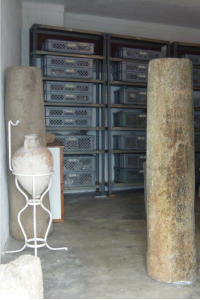")

trabalhos executados em São Paulo sec XIX (Palacete Toledo Lara, Edifício do Tribunal de Justiça, Fonte Monumental da Avenida São João).


Restauro dos 8 altares em mármore da Igreja de São Luis do Paraitinga (Tolosa SP) sec XVIII (Altares: Mor, Nossa Sra das Dores, São Vicente, Santíssimo).
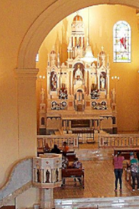 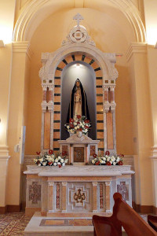 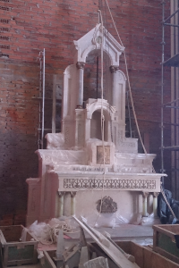
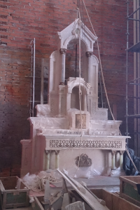
Quinta Real de Caxias (Portugal), restauro e réplicas do conjuntos escultóricos em terracota do escultor portugues Joaquim Machado de Castro sec XVII, (esculturas: Flora Farnesio, Flora, Leandro, Banho de Diana).

 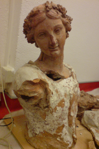
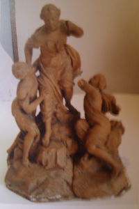
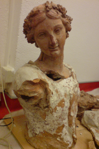
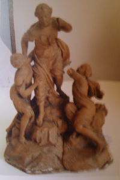
Quinta Real de Caxias - Portugal, sec XVII, (Estrutura edificada da casacata monumental, aquario em mármores, cegonha em fiança) .
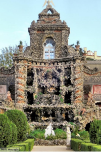") 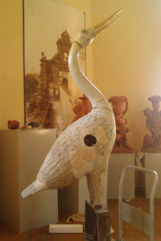
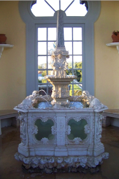
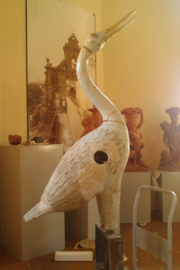
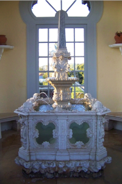
Restauros de esculturas de faixadas em Florianópolis.
 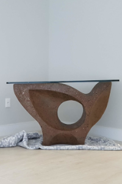
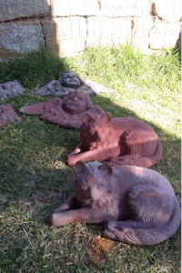
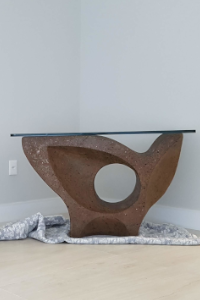
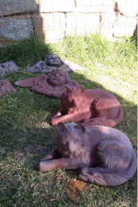